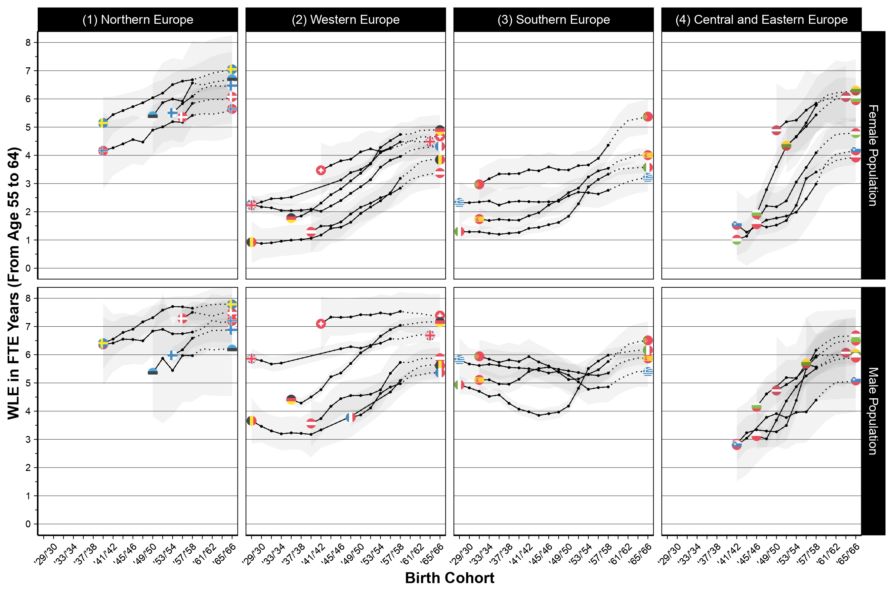
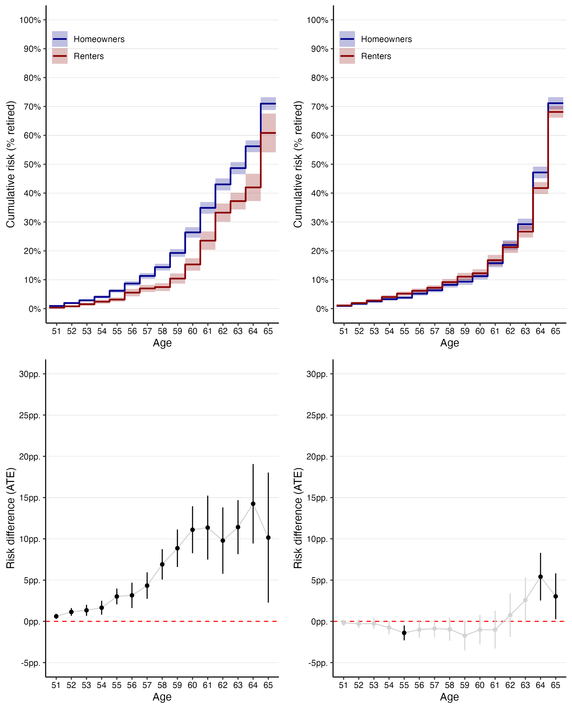
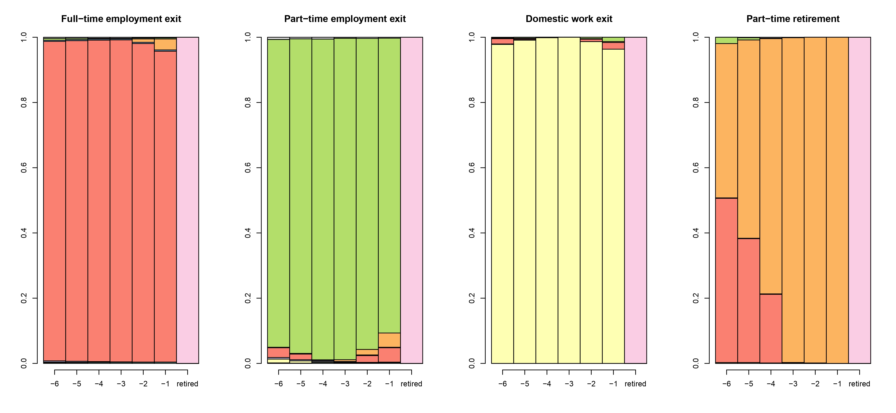
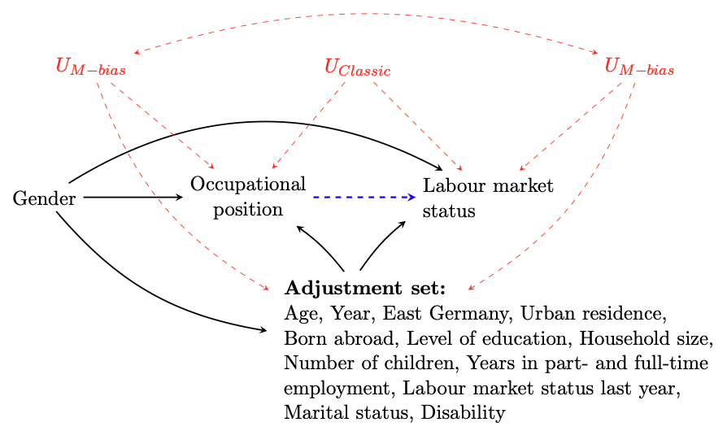

Jan Einhoff

PhD Candidate
DYNAMICS Research Training Group
Humboldt University & Hertie School
GitHub
Thank you for visiting my website.
I am a PhD Candidate at the DYNAMICS Research Training Group, a joint programme of Humboldt University and the Hertie School in Berlin, funded by the German Research Foundation (DFG). I was a visiting researcher at the Finnish Centre for Pensions in 2023 and at the University of Wisconsin-Madison in 2024. Later in 2024, I will be visiting Nuffield College in Oxford.
My research interests include life course dynamics, social stratification, comparative social policy, and novel quantitative methods for causal inference. For my dissertation, I investigate the class stratification of work-to-retirement transitions in the context of population aging and extending working life policies in Europe. I use a wide range of quantitative methods, including sequence and decomposition analyses, as well as targeted and machine learning approaches. I also enjoy working with the potential outcomes framework and graphical causal models.
Besides my PhD research, I work as a Consultant at the OECD's Directorate for Science, Technology and Innovation, where I contribute to reviews of national innovation policy and a project exploring natural language processing tools and large language models for innovation policy analysis. In 2024, I was selected as a Young Thinker at the Centre for European Policy Studies (CEPS) to discuss policy priorities for the European elections.
You can find my CV here.
Here are some of my current research projects:
1. Cohorts' working life expectancies and working years lost in 21 European countries[Submitted] [Replication materials] [Working paper]
Details
Abstract: Across Europe, the extension of working lives has been a central policy goal for more than two decades. Working life expectancy (WLE) and working years lost (WYL) are well-suited demographic indicators for assessing countries’ progress towards achieving this goal. This article first reviews all available estimates of WLE and WYL for European countries. It then uses the largest available micro-level data – the European Labour Force Surveys (n > 10 million) – to estimate and project WLEs and WYL for cohorts of men and women aged 55–64 and 65–74 in 21 European countries. The results show that WLEs have generally increased, most rapidly in Central and Eastern Europe and in Western Europe. Northern European countries reach the highest levels of WLEs. However, country and gender differences remain large, especially when WLEs are adjusted for working hours. Correlational analyses suggest that working years have been gained primarily from successive cohorts losing fewer working years to retirement. The remaining WYL to retirement, to inactivity among women, and to unemployment in Southern Europe will be the main barriers to a further extension of working lives over the coming years.
[Work in progress] [Replication materials] [Poster] [Slides]
Details
Abstract: Only recently has housing been recognised by theoretical and empirical work as a major dimension of social stratification. Causal evidence on the influence of housing on individual life course outcomes remains scarce, however, especially for the transition to retirement. In this paper, I use Targeted Maximum Likelihood Estimation (TMLE) to estimate the causal effect of individuals' housing tenure on the risk of entering retirement in two distinct European housing and welfare regimes. Crucially, TMLE allows for the use of machine learning algorithms and is doubly robust, which reduces the risk of misspecification and bias compared to conventional time-to-event analyses. I find that homeowners are more likely to be retired than their renting counterparts by up to 15.2pp. in the UK and up to 5.1pp. in Germany. These effects are larger for outright homeowners and change at the normal retirement ages of 60 and 65, indicating that institutionalised age thresholds moderate the influence of housing tenure on life course outcomes.
[Work in progress]
Details
Abstract: The flexibilisation of retirement is often proposed as a policy to promote longer working lives. In this paper, I use Competing Trajectory Analysis, a combination of sequence and event history analysis, and data from the SHARE to study how widespread "flexible" retirement transitions have become among men and women in different class positions.
[Work in progress]
Details
Abstract: Prior research has argued that gender differences in late working life and retirement transitions stem largely from men’s and women’s unequal positions in the occupational hierarchy. In this paper, I revisit this argument and quantify the contribution of occupational gender segregation to (dis-)advantages in late working life trajectories by using a novel causal decomposition technique based on linked administrative and survey data from the SOEP and the German Pension Fund.